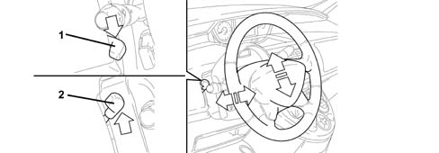
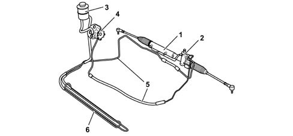

STEERING SYSTEM
- Path
- Descriptions > 41 STEERING UNIT > STEERING SYSTEM
- Kind
- system description
- Applies to
- all engines; all production periods
- Interactive page
- https://sloeber94.github.io/elrnDB-fUlss/en/#/179006640
Applies to: all engines; all production periods
The vehicle steering system guarantees:
STEERING COLUMN
The steering column has the benefit of dual adjustment, axial and radial, both for a distance of 20 mm, to allow all drivers to the find their ideal driving position in conjunction with the different possible seat adjustments (lengthwise, height and backrest angle).
To carry out the adjustment, proceed as follows:
- lower the lever into position 1,
- carry out the steering wheel adjustment,
- return the lever into position 2 to lock the steering wheel.

- 1- steering wheel released
- 2- steering wheel locked
POWER STEERING
Power steering is fitted as standard and it is the type where the assistance varies according to the engine speed.
The system consists of:
- a hydraulic pump connected to the direction valve,
- a direction valve incorporated in the gearbox casing with the task of operating the steering power assistance.
The operating principle is linked to the specifications of the pump which reduces the fluid flow rate and consequently the level of assistance as the engine speed increases

- 1 - power assisted steering box
- 2 - pinion engagement
- 3 - power assisted steering fluid reservoir
- 4 - power assisted steering pump
- 5 - pipes
- 6 - cooling coil (where fitted)
STEERING BOX
Large rack and pinion rods are fitted (f 28 mm for the rack and f 16 for the rods) to contain the flexible yield of the steering line and ensure improved driving precision.
The assembly is also extremely strong and capable of absorbing considerable impacts and stresses.
Technical specifications:
- steering ratio 51 mm / turn
- travel: 4 cylinder engines: petrol 166 mm, diesel 162 mm
- steering wheel turns: 4 cylinder engines: petrol 3.25, diesel 3.18
- turning circle for 4 cylinder engines: petrol 10.92 m, diesel 11.20 m